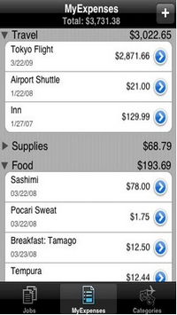

L'importance du feedback
Dans toute application, le feedback est une des notions les plus importantes. Il est capital d'informer la position de l'internaute dans une application mobile. Le site peut avoir une page comme dix, il est difficile sur un appareil mobile de s'en rendre compte si l'information n'est pas clairement fournie. Donner cette information va permettre à l'internaute non seulement de ne pas se perdre dans sa navigation mais également de la stopper et la reprendre dès qu'il le souhaite.
De plus, le feedback peut prendre une autre dimension. Les appareils mobiles possèdent des fonctionnalités qui ne sont pas portées sur ordinateur mais qui permettent de fournir un suivi tout aussi efficace. La fonction haptique notamment, c'est-à-dire le fait que l'appareil se mette à vibrer, est une bonne indication pour l'utilisateur. Elle remplace le feedback lorsque le son ne peut pas être utilisé.
Cette idée de guider l'internaute dans l'application reste importante, peu importe le support utilisé.
MyExpenses
 L'application MyExpenses fait partie des applications ayant un bon feedback. Comme dit plus haut, il est nécessaire d'informer l'utilisateur de sa position dans l'application, et cela à tout moment de sa navigation. Sur cette dernière, c'est le cas. Grâce au menu du bas, l'internaute peut naviguer en toute sérénité et savoir à tout moment sur quelle page il se trouve. Cela peut également se faire en numérotant les pages, en bas de l'application.
Kindle
Il est compliqué de trouver un mauvais exemple d'une application pour ce critère. Toutes les applications sont obligées d'avoir un bon feedback. Cependant, sur celle de Kindle, qui permet de conserver des EBooks acquis et d'en acheter d'autres, il manque une indication sur le nombre de livres présents dans chaque catégorie. Dans l'exemple ci-contre, l'utilisateur en peut pas savoir si après le livre bleu, il y en a trois ou dix.